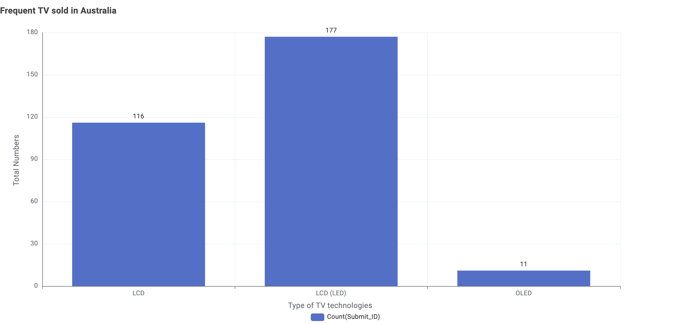

Frequent TV sold in Australia

From the dataset, LCD (LED) technology is the most popular with 177 units sold, followed by LCD at 116, while OLED only accounts for 11. This suggests consumers prefer budget-friendly and widely available LCD/LED TVs over premium OLED models.